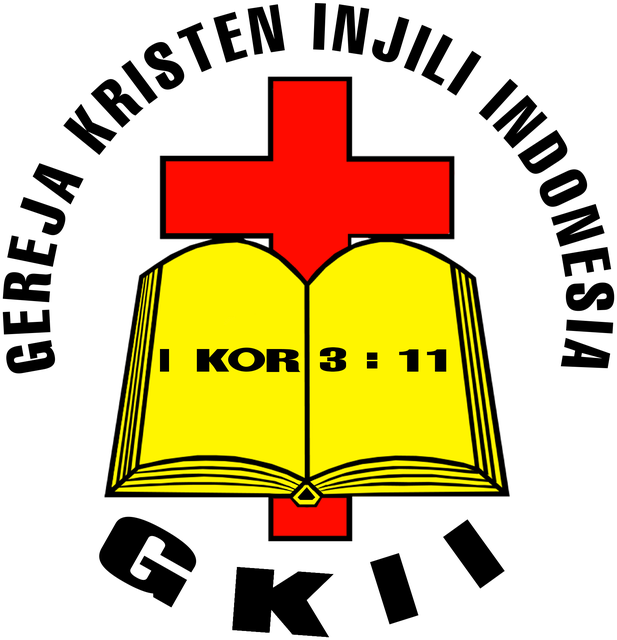
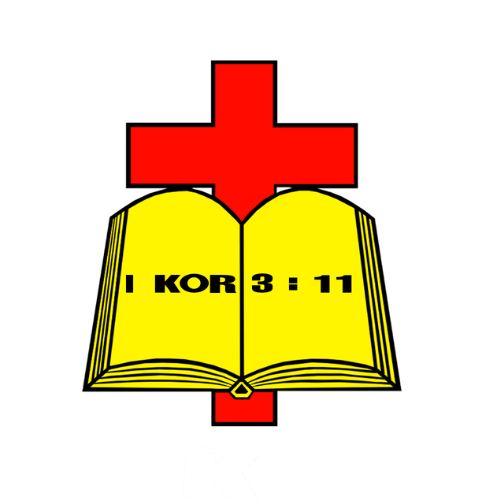

Ibadah Raya
--hari
--jam
--menit
--detik
Semua orang boleh hadir
Jadwal ibadah, kegiatan, renungan, dan pelayanan GKII Tebeng ada di satu halaman. Sudah mendapatkan yang anda perlukan? Ditunggu kehadirannya.
Memeriksa jam buka
Jadwal ibadah
Semua jadwal mingguan dalam satu daftar. Pilih kategori untuk menyaring.
Semua waktu dalam WIB. Jadwal dapat berubah pada hari raya, informasinya tercantum di bagian kegiatan.
Kegiatan
Ketuk sebuah kegiatan untuk melihat rinciannya.
Renungan pekan ini
Satu bacaan pendek per hari. Bacaan diambil dari Alkitab Anda sendiri.
Pelayanan
Enam kelompok yang terbuka untuk anggota baru. Anda boleh datang melihat dulu sebelum memutuskan.
Untuk anak-anak belajar tentang Tuhan lewat cerita, lagu, dan permainan.
Minggu · 08:00
Antar anak ke Shalom 1, sepuluh menit sebelum mulai. Para guru Sekolah Minggu akan mencatat nama anak dan kontak orang tua.
Untuk siswa SMP dan SMA berkumpul untuk ibadah, beraktifitas, dan kelompok diskusi yang aman untuk bertanya.
Minggu · 08:00
Langsung datang ke Shalom 3 Atas. Kakak pembina atau majelis remaja akan menyambut dan mengenalkan Anda pada teman satu kelompok.
Untuk pemuda-pemudi. Ibadah, pendalaman Alkitab, sharing and caring.
Kamis · 19:00 dan Minggu · 10:00
Datang ke Shalom 3 Ruang Iman pada Kamis malam, atau datang ke Shalom 3 Atas pada Minggu pagi. Pembina pemuda atau majelis pemuda akan menghubungkan ke kelompok kecil.
Persekutuan doa untuk seluruh jemaat, saling berbagi, dan saling mendoakan.
Senin · 19:00 dan Kamis · 08:00
Datang ke Shalom 3 Ruang Iman. Pengurus persekutuan doa akan menyambut anda.
Persekutuan untuk kaum wanita, belajar Firman Tuhan dan saling mendoakan.
Selasa · 16:00
Datang ke Shalom 2. Pengurus persekutuan wanita akan menyambut anda.
Persekutuan untuk kaum pria, belajar Firman Tuhan dan saling mendoakan.
Selasa · 16:00
Datang ke Shalom 3 Ruang Iman. Pengurus persekutuan pria akan menyambut anda.
Persekutuan untuk keluarga, belajar Firman Tuhan dan saling mendoakan.
Rabu dan Kamis · 17:00 - 21:00
Datang ke Sekretariat GKII Tebeng atau hubungi Sekretariat melalui kontak yang ada di halaman web. Pengurus persekutuan keluarga akan menyambut anda, dan menghubungkan anda ke kelompok yang terdekat dengan anda.
Persekutuan untuk kaum lansia, belajar Firman Tuhan dan saling mendoakan.
Selasa · 16:00
Datang ke Shalom 2. Pengurus persekutuan lansia akan menyambut anda.
Departemen
Pemuda, remaja, dan anak punya pembina, jadwal, dan kabar masing-masing. Buka tombol di tiap departemen untuk membaca berita dan artikelnya.
Berita dan artikel disimpan di dalam situs ini. Tombol Simpan di dalam tulisan hanya memberi penanda di perangkat Anda.
Pertama kali datang
Jawaban singkat untuk pertanyaan yang paling sering kami terima dari tamu baru.
Ibadah berlangsung sekitar 90 menit: pujian, doa, pembacaan firman, khotbah, dan persembahan. Anda boleh ikut berdiri dan bernyanyi, atau duduk menyimak sesuai kenyamanan Anda.
Pakaian rapi dan nyaman. Banyak jemaat memakai kemeja atau kaus berkerah. Tidak ada aturan baku.
Sekolah Minggu berjalan bersamaan dengan Ibadah Raya II, dengan pengasuh yang sudah dilatih. Ruang menyusui dan ganti popok tersedia di Lantai 1. Anak juga boleh ikut duduk bersama Anda di aula.
Parkir motor dan mobil tersedia di halaman dan basement, petugas akan mengarahkan. Ibadah Umum I biasanya paling ramai, jadi datanglah 20 menit lebih awal.
Ya. Ibadah Umum I disiarkan langsung setiap Minggu pukul 08:00 WIB. Cocok bagi Anda yang sedang sakit, bepergian, atau ingin mencoba dulu dari rumah.
Tidak. Semua orang diterima hadir, termasuk Anda yang berasal dari gereja lain atau sedang mencari. Keanggotaan bersifat pilihan.
Tentang kami
Menjadi keluarga yang mengalami kasih karunia dan menghadirkannya bagi semua orang.


Setiap orang diterima sebagaimana adanya, dan diajak bertumbuh dari sana.
Pengajaran kami berakar pada Alkitab dan disampaikan dengan bahasa yang mudah dipahami.
Iman dihidupi dalam kelompok kecil, bukan sendirian.
Kami hadir bagi tetangga, lewat tindakan nyata yang dapat dirasakan.
Kontak dan lokasi
Untuk doa, konseling pastoral, baptis, atau pertanyaan umum, sampaikan melalui Sekretariat.
Konseling pastoral dilayani dengan janji temu. Sebutkan kebutuhan Anda secara singkat, kami akan mengatur waktu yang sesuai.
Persembahan dapat diberikan saat ibadah atau lewat transfer. Mohon cantumkan jenis persembahan pada berita transfer.